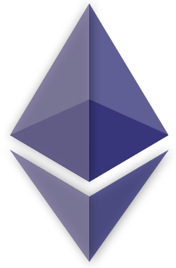

Apa itu Bitcoin?
Bitcoin adalah sebuah uang elektronik yang dibuat pada tahun 2009 oleh Satoshi Nakamoto. Nama tersebut juga dikaitkan dengan perangkat lunak sumber terbuka yang dia rancang, dan juga menggunakan jaringan peer-to-peer tanpa penyimpanan terpusat atau administrator tunggal di mana Departemen Keuangan Amerika Serikat menyebut bitcoin sebuah mata uang yang terdesentralisasi . Tidak seperti mata uang pada umumnya, bitcoin tidak tergantung dengan mempercayai penerbit utama. Bitcoin menggunakan sebuah database yang didistribusikan dan menyebar ke node-node dari sebuah jaringan P2P ke jurnal transaksi, dan menggunakan kriptografi untuk menyediakan fungsi-fungsi keamanan dasar, seperti memastikan bahwa bitcoin-bitcoin hanya dapat dihabiskan oleh orang memilikinya, dan tidak pernah boleh dilakukan lebih dari satu kali.
Desain dari Bitcoin memperbolehkan untuk kepemilikan tanpa identitas (anonymous) dan pemindahan kekayaan. Bitcoin - bitcoin dapat disimpan di komputer pribadi dalam sebuah format file wallet atau di simpan oleh sebuah servis wallet pihak ketiga, dan terlepas dari semua itu Bitcoin - bitcoin dapat di kirim lewat internet kepada siapapun yang mempunyai sebuah alamat Bitcoin. Topologi peer-to-peer bitcoin dan kurangnya administrasi tunggal membuatnya tidak mungkin untuk otoritas, pemerintahan apapun, untuk memanipulasi nilai dari bitcoin - bitcoin atau menyebabkan inflasi dengan memproduksi lebih banyak bitcoin.
Apa itu ethereum?
Ethereum (ETH atau Ξ) adalah sebuah platform rantai blok dengan fungsi kontrak cerdas. Ethereum mempunyai fungsi seumpama virtual machine yang bisa menjalankan kontrak cerdas peer-to-peer dengan uang kripto Ether (ETH). Ethereum merupakan sebuah projek besar yang dimulai oleh Vitalik Buterin pada tahun 2013. Blok pertama Ethereum ditemui pada 30 Juli 2015. Ether adalah unit tanda uang platform Ethereum. Ether diperdagangkan di bursa crytocurrency atau exchange seperti mata uang kripto lainnya. Harga saat pertama kali diluncurkan adalah 2,83 USD atau setara dengan 41.035 rupiah perkepingnya. Ethereum sendiri membangun sebuah jaringan blockchain yang berfokus pada coin Ethereum. Tapi seiring waktu, harga per keping Ethereum pernah sukses mencapai angka 3.500 dollar AS atau Rp 50,75 juta. Para pendiri koin bisa membuat coinnya masing-masing di atas jaringan Ethereum. Manfaat yang bisa didapatkan Ethereum adalah mendapatkan fee dari biaya pengembangan coin, distribusi, dan transaksi yang terjadi di atas jaringan Ethereum.
Bahkan, ethereum ini menjadi cryptocurrency terbesar kedua dunia setelah Bitcoin. Kenaikan Ethereum terjadi karena European Investment Bank (EIB) menerbitkan obligasi digital di jaringan Nockchain Ethereum. EIB membuat jaringan obligasi digital di jaringan blockchain Ethereum dan akan menerbitkan obligasi senilai 100 juta Euro. Ethereum dioperasikan sebagai jaringan terdesentralisasi yang dapat dibangun melalui aplikasi sehingga banyak token uang kripto yang diterbitkan menggunakan jaringan Ethereum. Selain itu, Ehtereum bisa digunakan untuk mengubah cara perdagangan sekuritas karena mengizinkan lebih banyak pengembangan yang menghasilkan berbagai kreativitas uang digital.